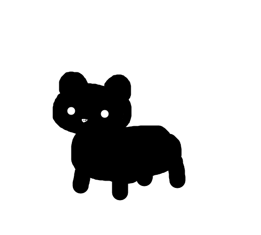

Welcome to my site.

My name is Jayden, although I usually just go by Jay.
I'm currently just trying to get through college so I can hopefully not have to work minimum wage.
We'll see where the job market goes with that one.
My main interests at the moment are programming, video games (a lot of DOOM), D&D, and I occasionally do some writing.
Currently, the main languages that I'm focusing on at the moment are Java, HTML, and CSS, with a little bit of javascript somewhere in there. This site's purpose is to showcase that I actually can build a site (Even if it doesn't look very good).
I'm also on the spectrum but that's a little secret.
Other than that, have fun exploring, and just click on the image in the upper left whenever you want to return to this homepage.